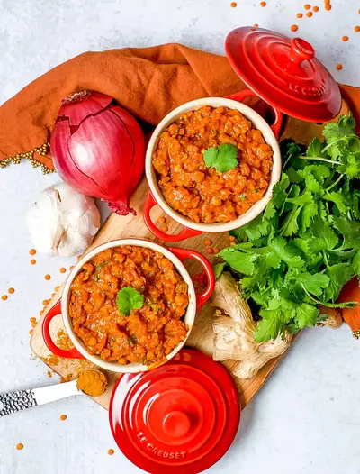

Red Lentil Dahl (Masoor Dal)

Ingredients
- 1 tsp extra virgin olive oil
- ¾ cup dry red lentils
- 1 cup chopped red onion
- ½ cup chopped celery
- 3 cloves chopped garlic
- 1 tsp grated ginger
- 1¼ tsp curry powder
- 1 tsp ground coriander
- ½ tsp garam masala
- ½-1 tsp salt
- ⅛ tsp crushed red pepper
- 1 cup vegetable stock
- 1 15oz can crushed tomatoes
- 1 15oz can light coconut milk
- ¼ cup chopped cilantro
Steps
- Mix the ginger garlic, curry powder, coriander, garam masala and crushed red pepper in small bowl and set aside.
- Heat a large soup pot over medium heat. Add your oil, onions and celery and cook on medium high heat for about 2 minutes until vegetables are fragrant and translucent. Stir occasionally to prevent burning.
- Turn down heat and add the ginger, garlic and spice mix and cook on low heat for about 1 minute, allowing the spices to “bloom” until they become fragrant. Add the lentils, vegetable stock, salt, diced tomatoes and coconut milk.
- Bring up to a boil, then reduce heat to a low simmer. Cook with a lid on for about 20 minutes, stirring occasionally until lentils are soft. If your heat is up too high, the liquid will evaporate before the lentils are done cooking. If that happens, just add a little bit more stock (or water, if you are using that) and continue to cook. When lentil are soft, turn off your heat and add in your chopped cilantro. Adding cilantro at the end will keep the flavor lively and fresh.
- Serve as a soup, or over brown rice with some steamed veggies, or with naan or roti! I chose to have ours as a "stew" over brown rice.
Recipe by Anjali Shah · The Picky Eater, from The Picky Eater. Saved here for personal use; the original has the full notes, tips and photos. Open original